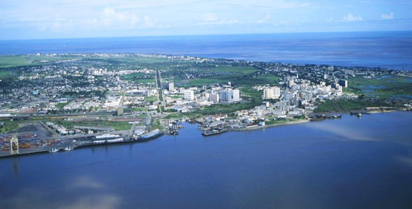
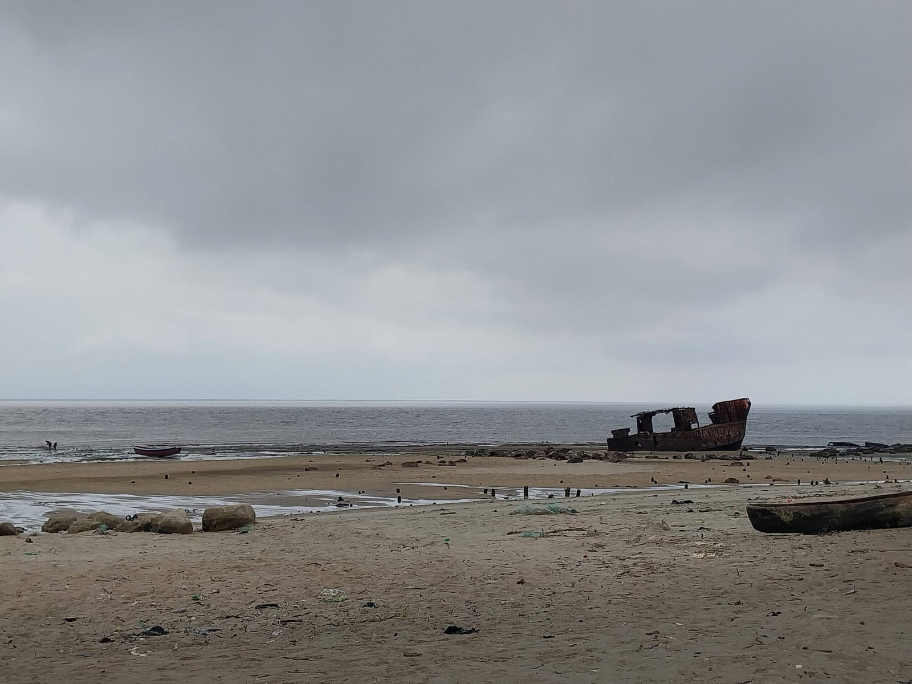
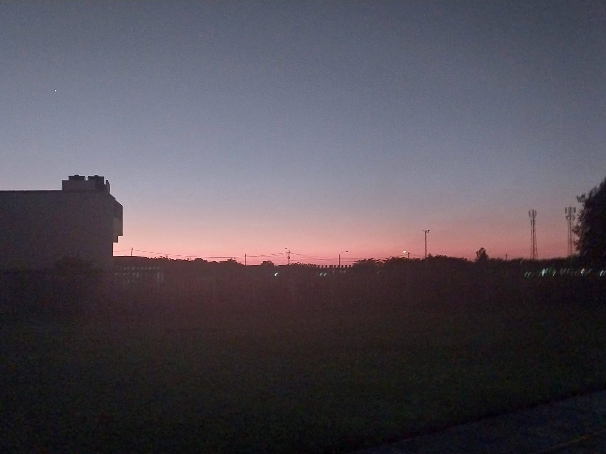
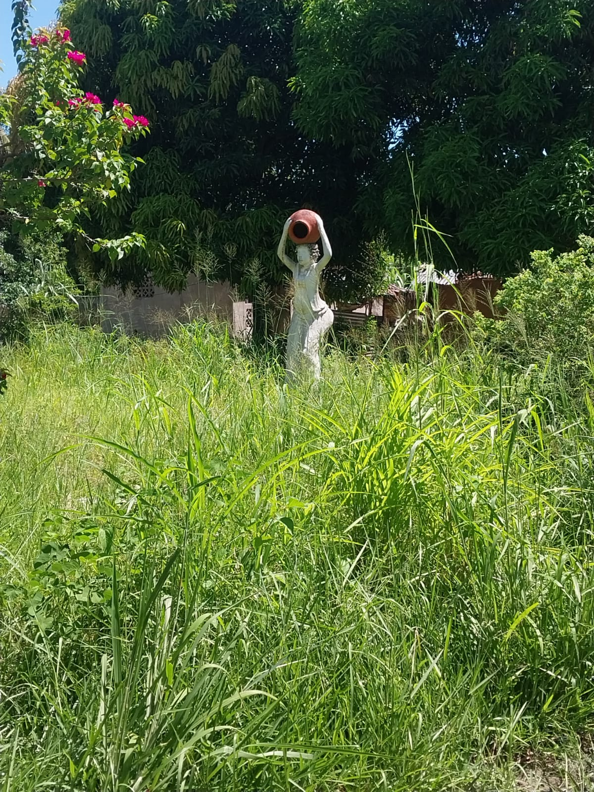

Beira is the capital of the province of Sofala, in Mozambique.
The most amazing thing in that city is the lovely people who lives there. They are hardworking, resilient, very supportive, and full of faith. Their faith in Jesus Christ is definitely their greatest strength to face daily challenges. Even though they face many, they stand together, as real disciples of the Savior.
Regardless of being of the same faith or not, they call each other brothers and sisters and care for them alike.


